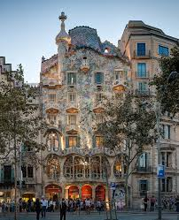
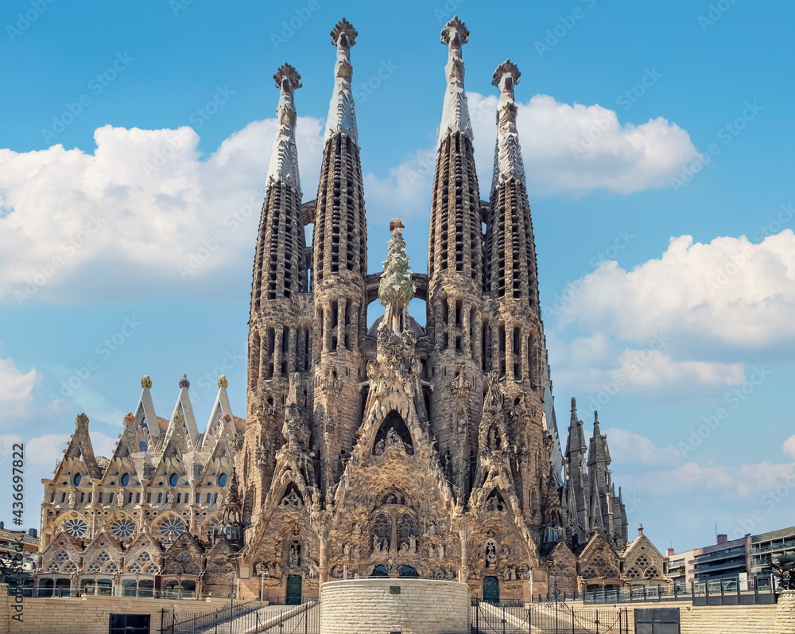
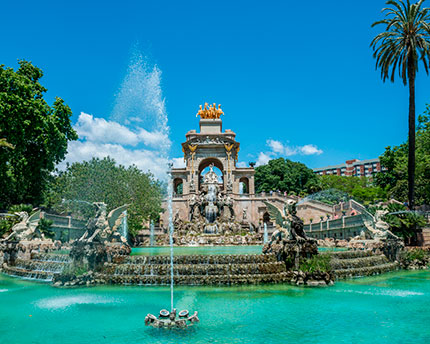

Famous Landmarks

Casa Batlló
One of the most famous buildings in Barcelona, designed by Antoni Gaudí, known for its whimsical architecture.

Sagrada Familia
Designed by Antoni Gaudí, this is one of Spain's most iconic landmarks in Barcelona.

Parc Ciutadella
A beautiful park in Barcelona that is home to a zoo, museums, and a large lake.

La Boqueria
A popular market in Barcelona known for its fresh produce, meat, seafood, and local delicacies.